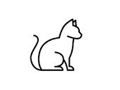

Благотворительные фонды для котов и собак

Зачем нужна благотворительность для питомцев?
Начну с того, что люди должны бережно и уважительно относиться к жизни всех существ. Особенно это относится к нашим питомцам.
К сожалению, многие коты и собаки не могут найти своего дома. Для этого существуют приюты. Они лечат, кормят и содержат у себя их, чтобы в дальнейшем найти питомцу семью. Но содержание приюта это не только огромная работа, а также затратная. Для этого создано множество фондов, спонсирующих приюты. Конечно это не единственный тип фондов. Существует бесконечное количество.
Этот сайт был создан, чтобы показать людям доверительные фонды (все фонды на сайте большие и проверенные фонды) и объяснить значение питомцев в нашей жизни.